Creative Performance
Direção criativa e produção
para mídia paga
Do conceito à entrega.
Quem sou eu
Sou Felipe Souza e trabalho com direção criativa e produção de anúncios para mídia paga, do conceito e do roteiro à entrega final.
A partir do produto e do contexto da campanha, desenvolvo a mensagem, os criativos e suas variações para explorar novas abordagens e renovar campanhas.
Você pode chegar apenas com o produto ou com um briefing já definido. Quando há dados disponíveis, eles ajudam a orientar o que testar e as próximas decisões criativas.
A partir do produto e do contexto da campanha, desenvolvo a mensagem, os criativos e suas variações para explorar novas abordagens e renovar campanhas.
Você pode chegar apenas com o produto ou com um briefing já definido. Quando há dados disponíveis, eles ajudam a orientar o que testar e as próximas decisões criativas.

Como trabalho
Entender o contexto, definir a direção e transformá-la em criativos e variações prontos para anunciar.
Entender o contextoProduto, oferta, público, objetivo, materiais e dados disponíveis orientam o que produzir. Se você ou sua equipe já tiverem briefing, roteiro ou direcionamento definido, parto desse material.
Hipótese criativaDefinição do que queremos testar: gancho, ângulo, argumento, benefício ou forma de apresentar a oferta. Sem histórico, a primeira hipótese parte do produto e do público.
Roteiro e direçãoA hipótese é transformada em gancho, desenvolvimento da mensagem, prova ou benefício e chamada para ação, com aprovação antes da produção.
ProduçãoTransformo a direção aprovada em anúncios, cuidando da mensagem, do ritmo e da apresentação do produto. A produção pode partir dos materiais da marca ou ser desenvolvida desde o início.
Entrega e variaçõesOs criativos são revisados e entregues nas proporções, durações e versões combinadas, organizados para facilitar a implementação e o teste.
Leitura dos resultadosQuando prevista no escopo e com dados disponíveis, a análise ajuda a decidir o que manter, variar ou explorar no próximo ciclo de produção.
Contato
Você pode chegar apenas com o produto. Conte o que vende e em que ponto está. Se já tiver oferta, briefing, anúncios, dados ou materiais da marca, eles ajudam como referência — mas não são obrigatórios.